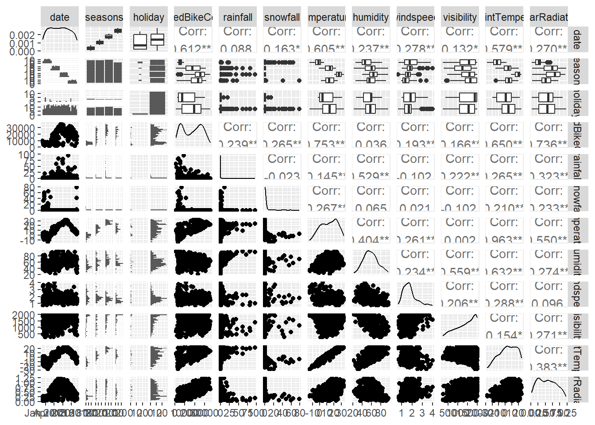
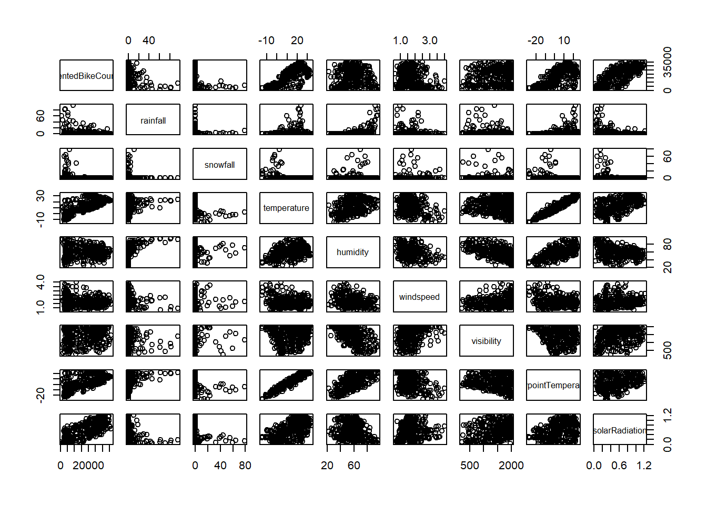

Assignment Information
ST 558
Homework 9
Individual
Shannon Riley
Data
Load in the bike sharing rentals CSV file:
bike <-read_csv('https://www4.stat.ncsu.edu/~online/datasets/SeoulBikeData.csv', locale = readr::locale(encoding ="latin1"))
Rows: 8760 Columns: 14
── Column specification ────────────────────────────────────────────────────────
Delimiter: ","
chr (4): Date, Seasons, Holiday, Functioning Day
dbl (10): Rented Bike Count, Hour, Temperature(°C), Humidity(%), Wind speed ...
ℹ Use `spec()` to retrieve the full column specification for this data.
ℹ Specify the column types or set `show_col_types = FALSE` to quiet this message.
Perform a basic EDA
First, determine how missing values are coded in the dataset and check for missing values:
bike |>summarize(across(everything(), ~sum(is.na(.))))
Date Rented Bike Count Hour Temperature(°C)
Length :8760 Min. : 0.0 Min. : 0.00 Min. :-17.80
N.unique : 365 1st Qu.: 191.0 1st Qu.: 5.75 1st Qu.: 3.50
N.blank : 0 Median : 504.5 Median :11.50 Median : 13.70
Min.nchar: 10 Mean : 704.6 Mean :11.50 Mean : 12.88
Max.nchar: 10 3rd Qu.:1065.2 3rd Qu.:17.25 3rd Qu.: 22.50
Max. :3556.0 Max. :23.00 Max. : 39.40
Humidity(%) Wind speed (m/s) Visibility (10m) Dew point temperature(°C)
Min. : 0.00 Min. :0.000 Min. : 27 Min. :-30.600
1st Qu.:42.00 1st Qu.:0.900 1st Qu.: 940 1st Qu.: -4.700
Median :57.00 Median :1.500 Median :1698 Median : 5.100
Mean :58.23 Mean :1.725 Mean :1437 Mean : 4.074
3rd Qu.:74.00 3rd Qu.:2.300 3rd Qu.:2000 3rd Qu.: 14.800
Max. :98.00 Max. :7.400 Max. :2000 Max. : 27.200
Solar Radiation (MJ/m2) Rainfall(mm) Snowfall (cm) Seasons
Min. :0.0000 Min. : 0.0000 Min. :0.00000 Length :8760
1st Qu.:0.0000 1st Qu.: 0.0000 1st Qu.:0.00000 N.unique : 4
Median :0.0100 Median : 0.0000 Median :0.00000 N.blank : 0
Mean :0.5691 Mean : 0.1487 Mean :0.07507 Min.nchar: 6
3rd Qu.:0.9300 3rd Qu.: 0.0000 3rd Qu.:0.00000 Max.nchar: 6
Max. :3.5200 Max. :35.0000 Max. :8.80000
Holiday Functioning Day
Length :8760 Length :8760
N.unique : 2 N.unique : 2
N.blank : 0 N.blank : 0
Min.nchar: 7 Min.nchar: 2
Max.nchar: 10 Max.nchar: 3
The column types look correct, although it would probably be useful to change Date and Hour to a time format and some of the character variables to factors. The summary statistics look reasonable.
Convert the Date variable into a date format:
bike <- bike |>mutate(Date =dmy(Date))
Convert the character-type variables to factors:
bike <- bike |>mutate(Seasons =factor(Seasons, levels =c('Winter', 'Spring', 'Summer', 'Autumn')),Holiday =as.factor(Holiday),`Functioning Day`=as.factor(`Functioning Day`))
Rename the variables as needed to have coding-friendly names:
bike <- bike |>rename_with(str_to_camel)
Create summary statistics across the numeric and categorical variables:
summary(bike)
date rentedBikeCount hour temperatureC
Min. :2017-12-01 Min. : 0.0 Min. : 0.00 Min. :-17.80
1st Qu.:2018-03-02 1st Qu.: 191.0 1st Qu.: 5.75 1st Qu.: 3.50
Median :2018-06-01 Median : 504.5 Median :11.50 Median : 13.70
Mean :2018-06-01 Mean : 704.6 Mean :11.50 Mean : 12.88
3rd Qu.:2018-08-31 3rd Qu.:1065.2 3rd Qu.:17.25 3rd Qu.: 22.50
Max. :2018-11-30 Max. :3556.0 Max. :23.00 Max. : 39.40
humidity windSpeedMS visibility10M dewPointTemperatureC
Min. : 0.00 Min. :0.000 Min. : 27 Min. :-30.600
1st Qu.:42.00 1st Qu.:0.900 1st Qu.: 940 1st Qu.: -4.700
Median :57.00 Median :1.500 Median :1698 Median : 5.100
Mean :58.23 Mean :1.725 Mean :1437 Mean : 4.074
3rd Qu.:74.00 3rd Qu.:2.300 3rd Qu.:2000 3rd Qu.: 14.800
Max. :98.00 Max. :7.400 Max. :2000 Max. : 27.200
solarRadiationMjM2 rainfallMm snowfallCm seasons
Min. :0.0000 Min. : 0.0000 Min. :0.00000 Winter:2160
1st Qu.:0.0000 1st Qu.: 0.0000 1st Qu.:0.00000 Spring:2208
Median :0.0100 Median : 0.0000 Median :0.00000 Summer:2208
Mean :0.5691 Mean : 0.1487 Mean :0.07507 Autumn:2184
3rd Qu.:0.9300 3rd Qu.: 0.0000 3rd Qu.:0.00000
Max. :3.5200 Max. :35.0000 Max. :8.80000
holiday functioningDay
Holiday : 432 No : 295
No Holiday:8328 Yes:8465
The variable functioningDay describes whether the bike rental system is functioning or not, specifically as non-functional hours and functional hours. If we’re interested in the count of bikes rented at each hour, zeroes from non-functioning hours represent a different case than zeroes during functioning hours, so we’ll probably want to remove observations during non-functioning hours.
Remove observations during non-functioning hours (only keep observations during functioning hours):
bike <- bike |>filter(functioningDay =='Yes')
To simplify the analysis, combine all the hourly observations for each day to make one observation per day:
* Sum the bike_count, rainfall, and snowfall variables * Calculate the mean of the other weather-related variables
# A tibble: 353 × 12
date seasons holiday rentedBikeCount rainfall snowfall temperature
<date> <fct> <fct> <dbl> <dbl> <dbl> <dbl>
1 2017-12-01 Winter No Holiday 9539 0 0 -2.45
2 2017-12-02 Winter No Holiday 8523 0 0 1.32
3 2017-12-03 Winter No Holiday 7222 4 0 4.88
4 2017-12-04 Winter No Holiday 8729 0.1 0 -0.304
5 2017-12-05 Winter No Holiday 8307 0 0 -4.46
6 2017-12-06 Winter No Holiday 6669 1.3 8.6 0.0458
7 2017-12-07 Winter No Holiday 8549 0 10.4 1.09
8 2017-12-08 Winter No Holiday 8032 0 0 -3.82
9 2017-12-09 Winter No Holiday 7233 0 0 -0.846
10 2017-12-10 Winter No Holiday 3453 4.1 32.5 1.19
# ℹ 343 more rows
# ℹ 5 more variables: humidity <dbl>, windspeed <dbl>, visibility <dbl>,
# dewpointTemperature <dbl>, solarRadiation <dbl>
Recalculate the basic summary statistics:
summary(bikeDay)
date seasons holiday rentedBikeCount
Min. :2017-12-01 Winter:90 Holiday : 17 Min. : 977
1st Qu.:2018-02-27 Spring:90 No Holiday:336 1st Qu.: 6967
Median :2018-05-28 Summer:92 Median :18563
Mean :2018-05-28 Autumn:81 Mean :17485
3rd Qu.:2018-08-24 3rd Qu.:26285
Max. :2018-11-30 Max. :36149
rainfall snowfall temperature humidity
Min. : 0.000 Min. : 0.000 Min. :-14.738 Min. :22.25
1st Qu.: 0.000 1st Qu.: 0.000 1st Qu.: 3.304 1st Qu.:47.58
Median : 0.000 Median : 0.000 Median : 13.738 Median :57.17
Mean : 3.576 Mean : 1.863 Mean : 12.776 Mean :58.17
3rd Qu.: 0.500 3rd Qu.: 0.000 3rd Qu.: 22.592 3rd Qu.:67.71
Max. :95.500 Max. :78.700 Max. : 33.742 Max. :95.88
windspeed visibility dewpointTemperature solarRadiation
Min. :0.6625 Min. : 214.3 Min. :-27.750 Min. :0.02917
1st Qu.:1.3042 1st Qu.:1087.0 1st Qu.: -5.188 1st Qu.:0.28333
Median :1.6583 Median :1557.8 Median : 4.612 Median :0.56500
Mean :1.7261 Mean :1434.0 Mean : 3.954 Mean :0.56773
3rd Qu.:1.9542 3rd Qu.:1874.3 3rd Qu.: 14.921 3rd Qu.:0.82000
Max. :4.0000 Max. :2000.0 Max. : 25.038 Max. :1.21667
Create plots to explore relationships and report correlations between numeric variables:
# Produce everything at once (easier to read when output in console rather than inline because there are so many variables)ggpairs(bikeDay)
`stat_bin()` using `bins = 30`. Pick better value `binwidth`.
`stat_bin()` using `bins = 30`. Pick better value `binwidth`.
`stat_bin()` using `bins = 30`. Pick better value `binwidth`.
`stat_bin()` using `bins = 30`. Pick better value `binwidth`.
`stat_bin()` using `bins = 30`. Pick better value `binwidth`.
`stat_bin()` using `bins = 30`. Pick better value `binwidth`.
`stat_bin()` using `bins = 30`. Pick better value `binwidth`.
`stat_bin()` using `bins = 30`. Pick better value `binwidth`.
`stat_bin()` using `bins = 30`. Pick better value `binwidth`.
`stat_bin()` using `bins = 30`. Pick better value `binwidth`.
`stat_bin()` using `bins = 30`. Pick better value `binwidth`.
`stat_bin()` using `bins = 30`. Pick better value `binwidth`.
`stat_bin()` using `bins = 30`. Pick better value `binwidth`.
`stat_bin()` using `bins = 30`. Pick better value `binwidth`.
`stat_bin()` using `bins = 30`. Pick better value `binwidth`.
`stat_bin()` using `bins = 30`. Pick better value `binwidth`.
`stat_bin()` using `bins = 30`. Pick better value `binwidth`.
`stat_bin()` using `bins = 30`. Pick better value `binwidth`.
`stat_bin()` using `bins = 30`. Pick better value `binwidth`.
`stat_bin()` using `bins = 30`. Pick better value `binwidth`.

# Produce scatterplots (easier to read when output in console rather than inline because there are so many variables)plot((bikeDay |>select(where(~is.numeric(.x)))))

# A couple violin plots to focus on the bike count vs categorical variablesggplot(bikeDay, aes(x = seasons, y = rentedBikeCount)) +geom_violin(quantile.linetype =c(2, 1, 2))
In preparation for fitting models to the data, split the data into training and test sets (75/25 split), stratifying the split on the seasons variable:
Now, create standardized versions of the numeric variables: * Subtract training set mean * Divide by training set standard deviation
bikeTrainZ <- bikeTrain |>mutate(across(where(is.numeric),~ (.x -mean(.x))/sd(.x),.names ="z_{.col}"))# Also modify the test set variables by standardizing them with the training set mean and standard deviationbikeTestZ <- bikeTest |>mutate(across(where(is.numeric),~ (.x -mean(bikeTrain$.x))/sd(bikeTrain$.x),.names ="z_{.col}"))
Fit models
Fit the following models to the testing dataset:
1. A model with all the standardized numeric variables included along with the seasons, holiday, and weekend/weekday variables:
A model with all the terms in the first model but also interactions between seasons and holiday, seasons and temp, and temp and rainfall (all standardized variables used here):